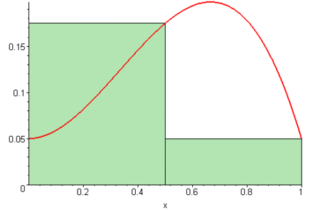

TENDIENDO A LO INFINITAMENTE PEQUEÑO
para encontrar el area bajo una curva

La sumatoria de Riemann es un método para aproximar el área bajo una curva.
Se divide el intervalo \([a,b]\) en \(n\) subintervalos de ancho \(\Delta x = \frac{b-a}{n}\).
En cada subintervalo se toma un punto \(x_i^*\) y se evalúa la función \(f(x)\).
La suma de las áreas de los rectángulos formados es:
\[S_n = \sum_{i=1}^{n} f(x_i^*) \, \Delta x\]
Cuando el número de particiones \(n\) crece indefinidamente, los rectángulos se vuelven más delgados y la suma se aproxima al área exacta bajo la curva.
El límite de estas sumas es lo que definimos como la integral definida:
\[\int_a^b f(x) \, dx = \lim_{n \to \infty} \sum_{i=1}^{n} f(x_i^*) \, \Delta x\]
De esta manera, la integral representa el área exacta bajo la gráfica de \(f(x)\) entre \(x=a\) y \(x=b\).
INTEGRALES PRIMARIOS
\[\int k \, dx = kx + C\]
\[\int x^n \, dx = \frac{x^{n+1}}{n+1} + C \quad (n \neq -1)\]
\[\int \frac{1}{x} \, dx = \ln |x| + C\]
\[\int e^x \, dx = e^x + C\]
\[\int a^x \, dx = \frac{a^x}{\ln a} + C \quad (a>0, a \neq 1)\]
\[\int \sin x \, dx = -\cos x + C\]
\[\int \cos x \, dx = \sin x + C\]
\[\int \sec^2 x \, dx = \tan x + C\]
\[\int \csc^2 x \, dx = -\cot x + C\]
\[\int \sec x \tan x \, dx = \sec x + C\]
\[\int \csc x \cot x \, dx = -\csc x + C\]
\[\int \frac{1}{\sqrt{1-x^2}} \, dx = \arcsin x + C\]
\[\int \frac{-1}{\sqrt{1-x^2}} \, dx = \arccos x + C\]
\[\int \frac{1}{1+x^2} \, dx = \arctan x + C\]
\[\int \frac{-1}{1+x^2} \, dx = \text{arccot}\, x + C\]
\[\int \frac{1}{x\sqrt{x^2-1}} \, dx = \arcsec x + C\]
\[\int \frac{-1}{x\sqrt{x^2-1}} \, dx = \arccsc x + C\]